辽阔的新疆
我们新疆好地方啊♬♪♩♭♪ 天山南北好牧场♬♪♩♭♪ 戈壁沙滩变良田♬♪♩♭♪ 积雪溶化灌农庄♬♪♩♭♪ 戈壁沙滩变良田♬♪♩♭♪ 积雪溶化灌农庄♬♪♩♭♪♬♪♩♭♪
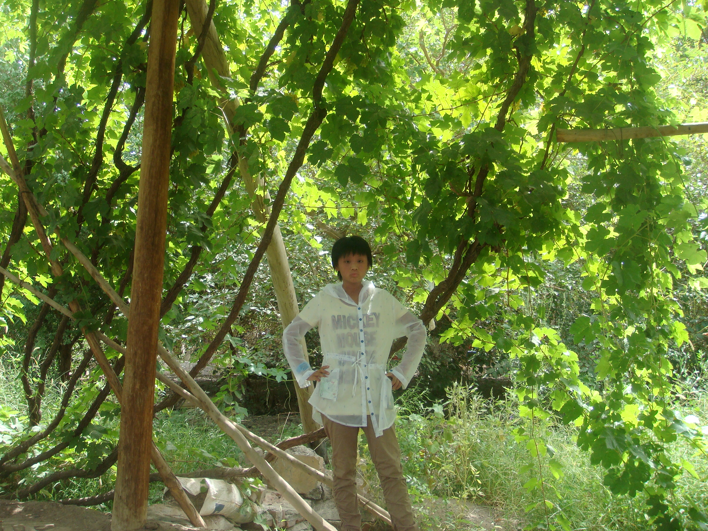 >
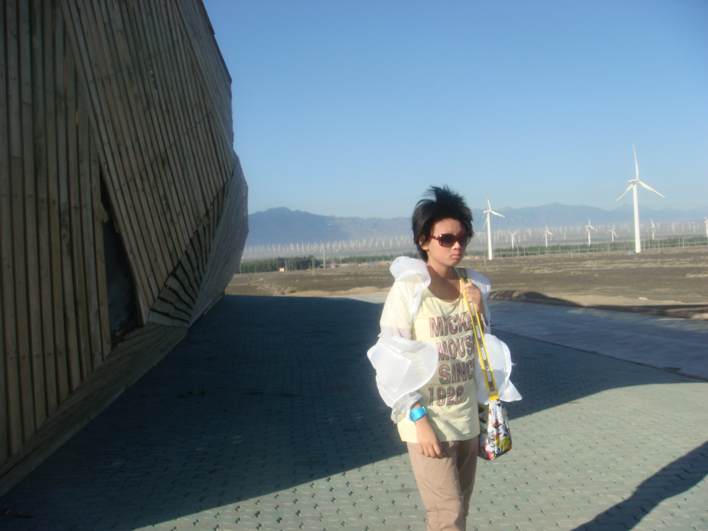
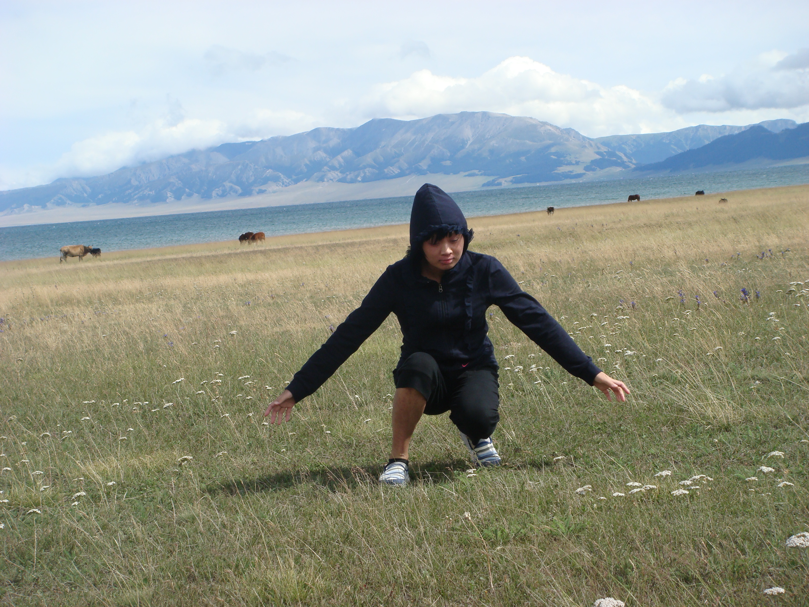 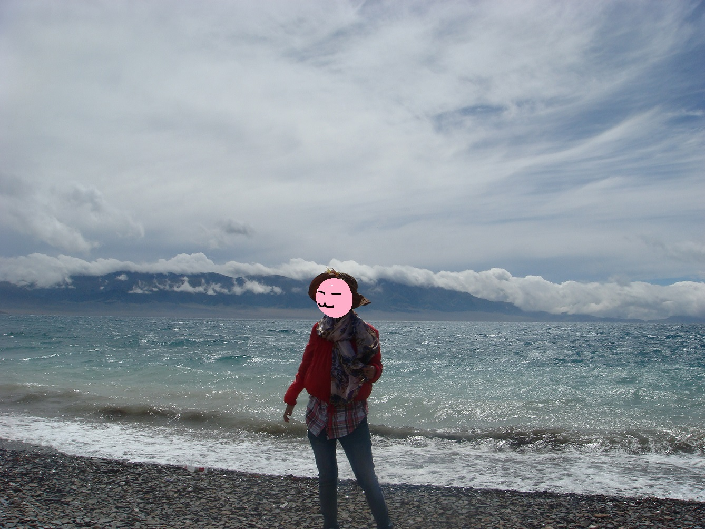
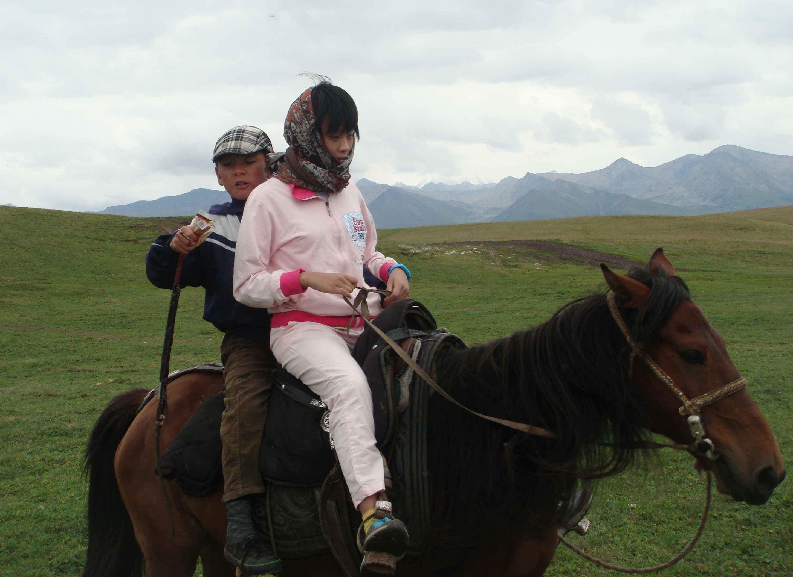
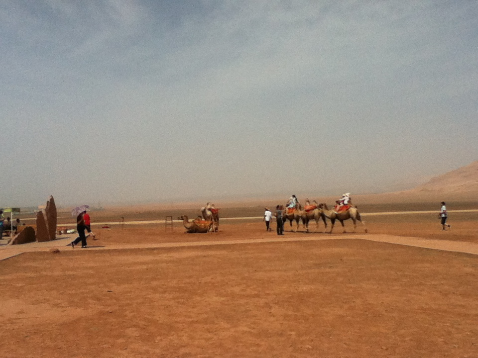

青翠欲滴的葡萄藤爬满了整个视野，弥漫着夏日的勃勃生机，美丽丽哒。
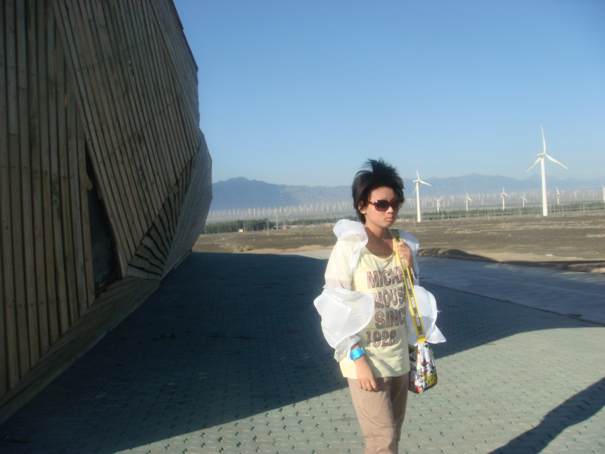
在乌鲁木齐去吐鲁番的途中，上百台大风车在广袤的旷野上呼呼转动，映着蓝天白云，这里是目前我国最大的风能基地——新疆达坂城风力发电厂。感觉要被刮跑了！
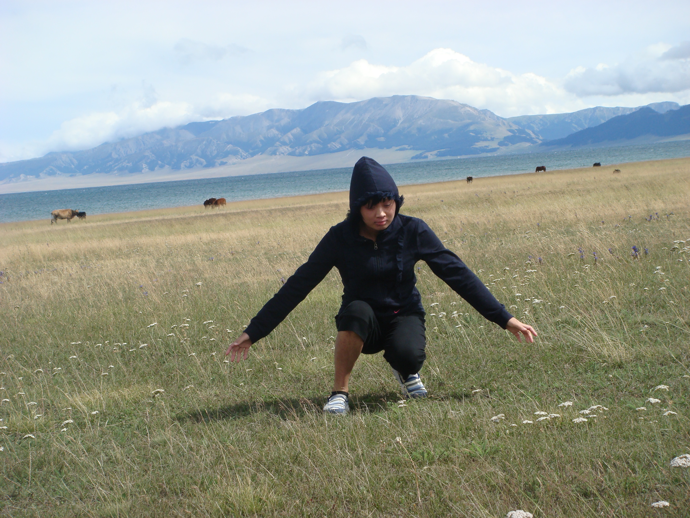 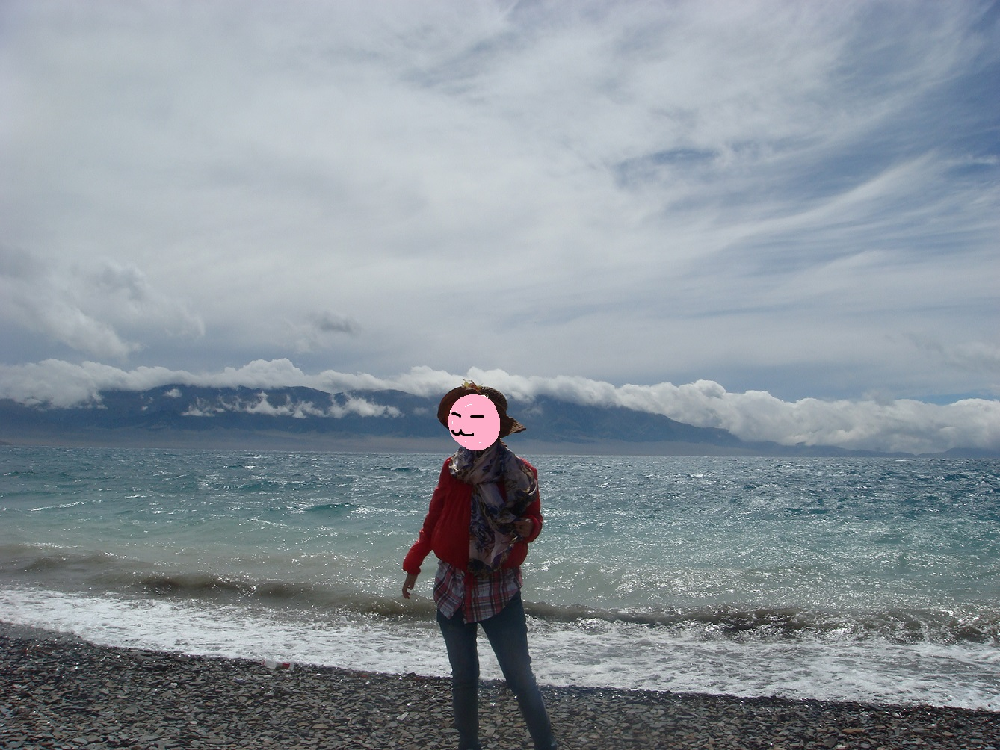
随着海拔的升高，气温忽然冷了起来，终于目睹了美丽的赛里木湖，赛里木湖位于新疆的博州，距离乌鲁木齐车程约600公里。一下车，扑面而来的就是纯粹剔透的蓝，孔雀蓝，藏青色的海子随着呼啸的风儿卷起浪花，与宝蓝色的天空海天相连，近处无边的草地上 遍野是粉紫色的野花。风儿偶尔带来牛羊的叫声，湖畔的草原是优质的牧场.远处的青山是黛蓝色的，远远望去分不清是山，是海，是云？
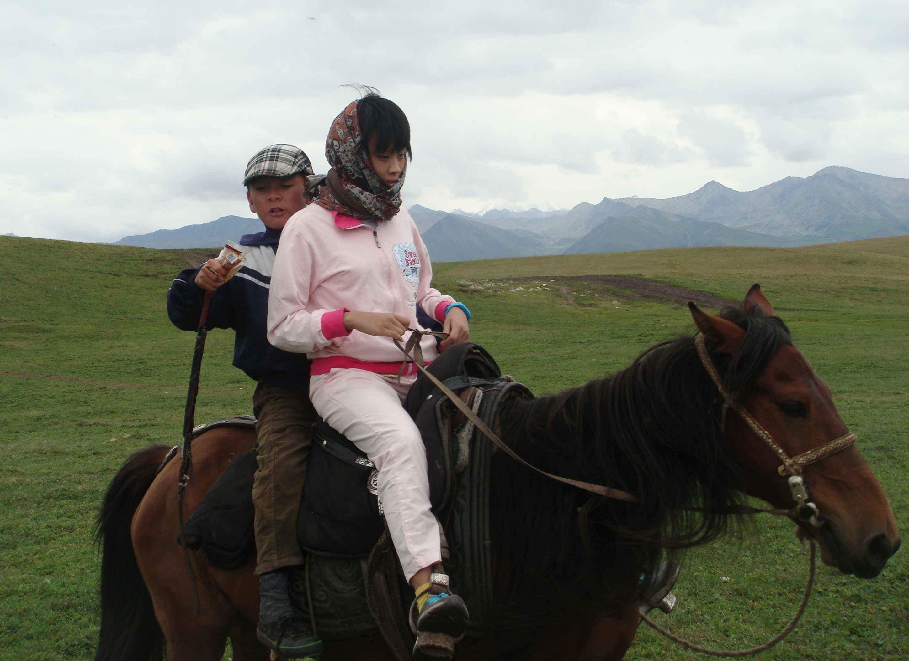
喀纳斯草原，一望无垠，听说后面有一个大峡谷，可惜没有时间去。在铺满野花的草地上走了一个小时，清新的空气让人心情愉悦，在这里切实的感受到大自然的伟大，天地人，万物之本也。天生之，地养之，人类得以短暂一活。在大草原的入口处有穿着校服，帅气的骑马高手们，你可以让他们带你在附近的山丘溜达，好像骑一次20的样子，也有摩托车，如果有勇气的话飞速冲上陡陡的山坡超级刺激的，摩托车应该是60一次。
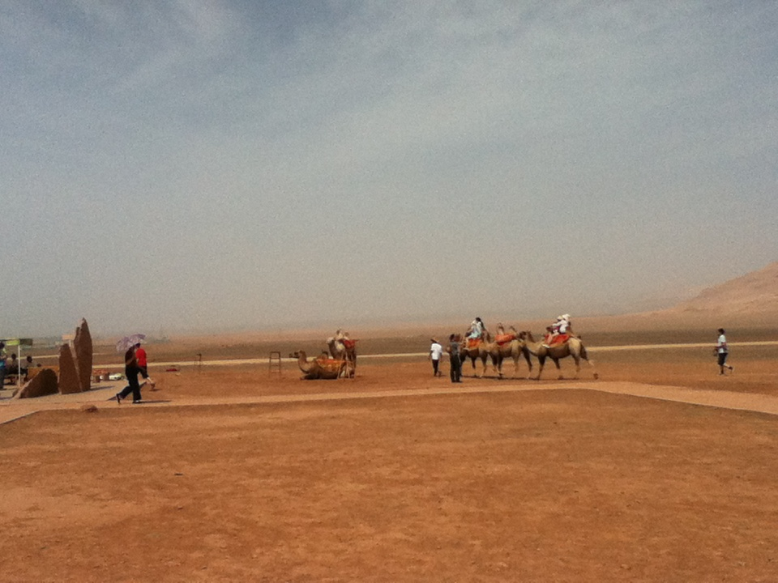
传说中的火焰山，今个儿见着真面目了，在新疆吐鲁番盆地的中北部，呈红褐色的山丘，夏季最高气温高达摄氏47.8度，地表最高温度高达摄氏70度以上。
雪山天池的尊容展现于眼前，巍巍天山，口衔天池
新疆的宝树，沧桑的胡杨